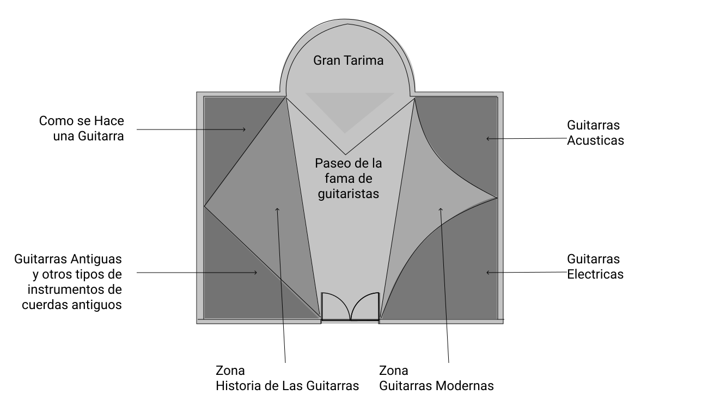

Tema
En este museo vas a encontrar las diferentes etapas que ha tenido la música a través de la historia y también la evolución y transformación que han tenido los diferentes elementos musicales tanto en la cultura australiana como de otras regiones del mundo. En este museo verás, las distintas guitarras que el hombre ha creado con sus características y hermosos diseños. Entenderás la importancia de la música en las sociedades desde tiempos inmemoriales. Al visitar este museo podremos acercarnos más a lo que fueron los grandes maestros de la guitarra.
Propósito
El propósito de nuestro museo ademas de mostrar las obras maestras, es mostrar la historia de la música desde los cantos prehistóricos de los indígenas hacia sus dioses hasta el moderno Pop. Pasando por historias fascinantes y creaciones musicales sin igual dejando una experiencia muy enriquecedora
Salas
Porque visitarlo
Si te gusta la música, te gusta aprender cosas nuevas, y conocer historias nunca antes contadas sobre la música, te encantará visitarnos.
Ubicación
Nosotros nos encontramos en la ciudad de Sidney Australia, al lado del Parque Olímpico de Sidney. Esta ciudad es una ciudad rica en cultura y arte musical.
Contáctenos
- Teléfono: 4594517
- Correo:contacto@musicayguitarras.com
- Dirección:47/2 Slough Ave, Silverwater NSW 2128
- musicayguitarras.com